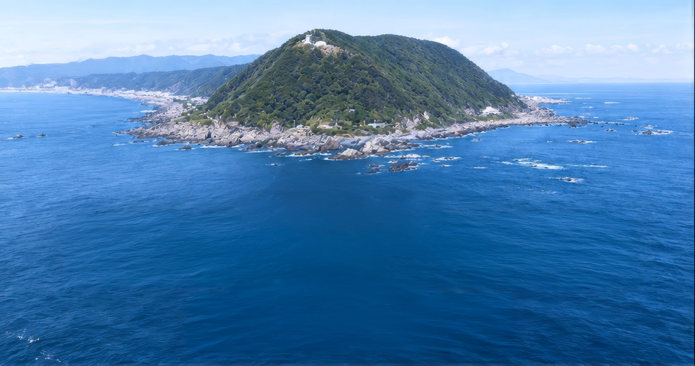
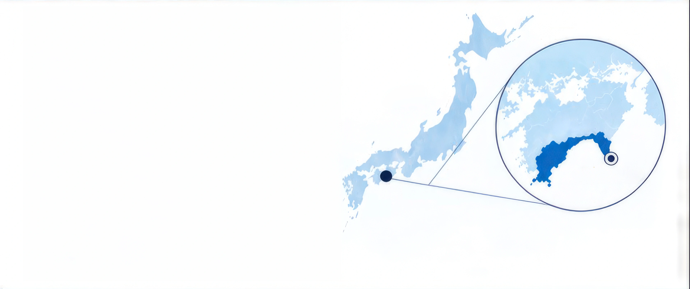
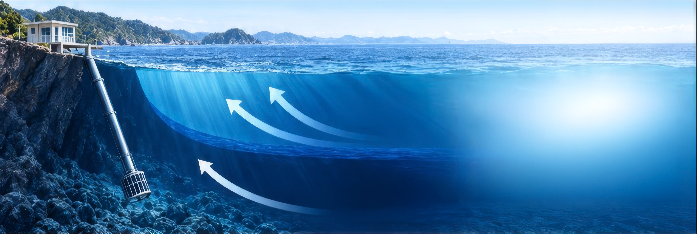
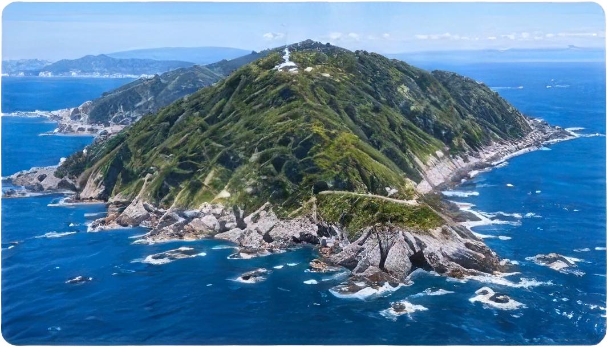
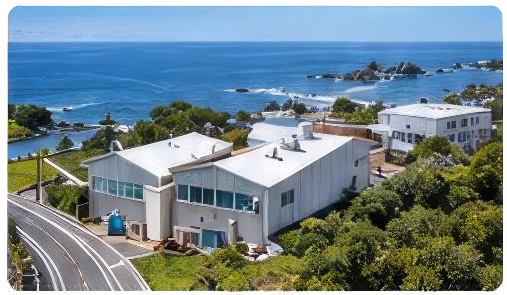
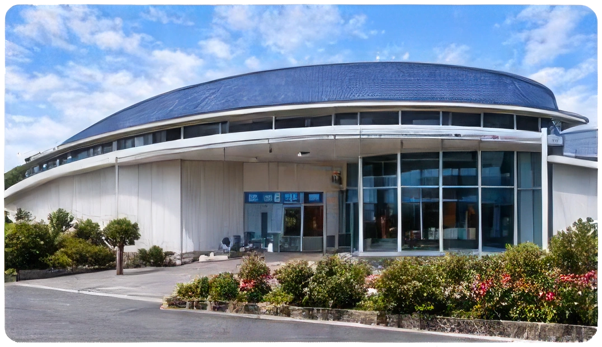
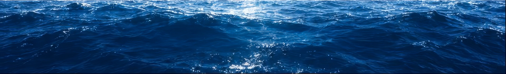
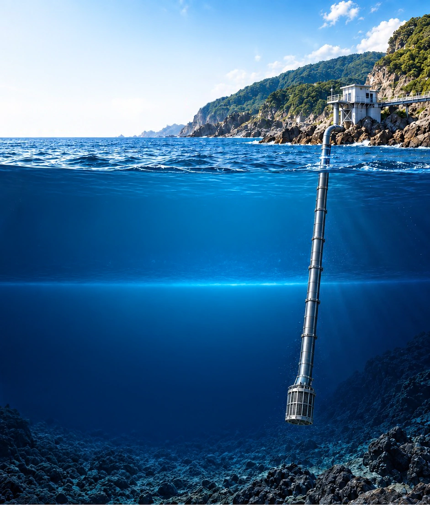

大地誕生の最前線、室戸で
MUROTO DEEP SEA WATER
Naturally occurring ocean electrolytes from Kochi, Japan
Sourced off Cape Muroto in Kochi Prefecture, Japan.
Our intake draws pristine deep sea water
from approximately 320–374 meters below the surface.

WHY MUROTO IS DIFFERENT
- Rare coastal upwelling environment
- Clean, stable deep-water conditions
- Naturally occurring minerals
and trace elements - Naturally balanced
electrolyte profile - Source area linked to
Muroto UNESCO Global Geopark

Surface waterMore variable
Deep sea waterStable and nutrient-rich
Only about 0.1%
of the ocean surface is associated with coastal upwelling regions.
OUR JOURNEY OF INNOVATION
1985
Muroto area designated as a research model area for deep sea water utilization

1989
Japan’s first onshore deep-sea water intake facility established in Kochi

1996
Products using Muroto Deep Sea Water launched


Rare by nature. Valuable by origin.

WHY DEEP SEA WATER
What deep sea water means and why depth matters
Deep sea water generally refers to seawater collected from depths below 200 m, where sunlight does not effectively reach. The environment stays cold and stable, with less influence from short-term surface fluctuations.
- 0 mSea surface
- 0–200 mSurface water
- Sunlight reaches this zone.
It is affected by weather, tides, and surface conditions. - THERMOCLINEAround 100–200 m
- A transition layer where temperature changes rapidly with depth.
- Below 200 mDeep sea water
- Sunlight does not effectively reach. The environment is cold, stable, and less affected by short-term surface fluctuations.
- 320–374 mMuroto intake depth
- Seawater is collected from this depth range through the intake pipe.
- Seabed
- Approximately 1,000 m
DEEP SEA WATER VS SURFACE WATER
| DEEP SEA WATER (Below 200 m) | Characteristic | SURFACE WATER (0–200 m) |
|---|---|---|
| Sunlight does not effectively reach. | Sunlight exposure | Sunlight reaches. Affected by day–night and seasonal changes. |
| Cold and stable year-round. | Temperature stability | Warmer and fluctuates with temperature, seasons, and weather. |
| Lower risk of surface-derived pollutants. | Pollution risk | Higher risk of urban runoff, rainfall, and surface pollutants. |
| Mineral composition is stable and consistent. | Mineral stability | Mineral levels vary with weather, rivers, and biological activity. |
Depth creates purity. Stability creates value.
Deep sea water from below 200 m supports a wide range of beneficial uses.